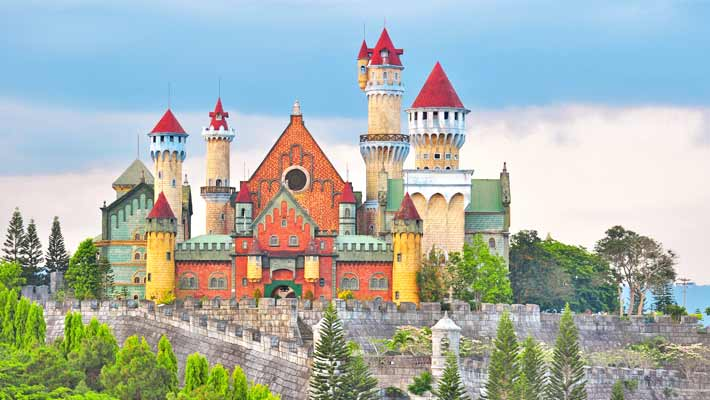
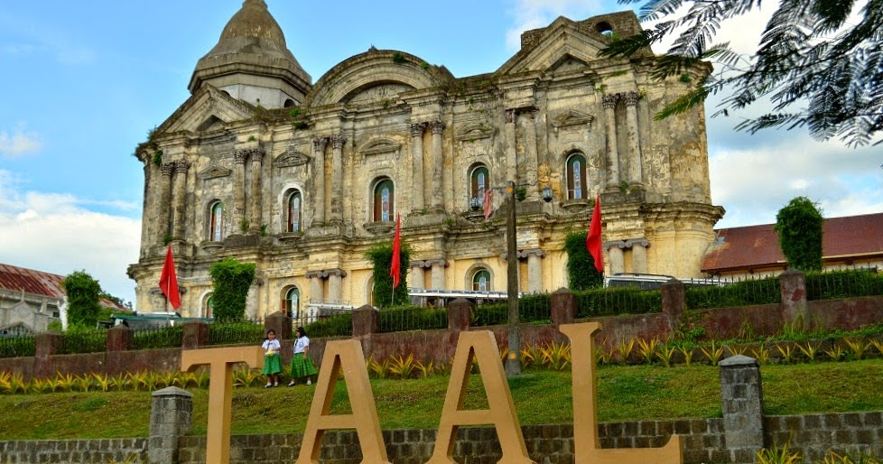

Fortune Island is located Nasugbu in Batangas. It used to be a private island harboring an exclusive
luxury resort. But it is difficult and costly to maintain a luxury resort without a ready source of fresh water.
One cannot drink luxury. Consequently, it ceased its operations in 2006.
One remarkable reminder of its grandeur stands atop the island’s limestone cliff overlooking the sea – an acropolis with Grecian pillars and statues.

Fantasy World A CASTLE SITS ATOP A hill in the Philippines, its colorful walls adding an unexpected pop of color to the surrounding greenery. The stalwart structure, which looks like an image straight from a fairytale, seems oddly out of place.
There were grand plans for the castle and its surrounding theme park to become the “Disneyland of the Philippines.” Called Fantasy World, it was meant to rival the beloved international amusement parks.
But for the people behind Fantasy World, opening the park was a dream that never came true. The businessman who backed the project ran into financial issues before construction was complete, forcing him to abandon his plan.
Now, the castle’s once-bright exterior is fading. Paint peels from the walls of its unfinished rooms. The rides lay dormant, never able to grumble to life beneath hordes of delighted children.
Though the park couldn’t open as planned, you can still enter and explore the Disneyland that could have been. You can walk across the rope bridge that leads to the park’s tree house, which offers beautiful views of
the local scenery. You can even climb the castle’s towers and feel like a real-life Rapunzel surveying the empty kingdom.

The Taal Basilica, canonically known as the Minor Basilica of Saint Martin of Tours, is a Minor Basilica in the town of Taal, Batangas in the Philippines,
within the Archdiocese of Lipa.
It is considered to be the largest church in the Philippines and in Asia, standing 88.6 metres long and 48 metres wide. Address: Calle San Martin, Taal, 4208 Batangas Heritage designation: National Historical Landmark Priest in charge: Rev. Fr. Manuel Luis Guazon Founded: 1572 Architectural styles: Baroque architecture, Neoclassical architecture
Taal Volcano is a large caldera filled by Taal Lake in the Philippines. Located in the province of
Batangas, the volcano is the second-most active volcano in the Philippines, with 34 recorded historical eruptions,
all of which were concentrated on Volcano Island, near the middle of Taal Lake. Last eruption: 12 January 2020 Elevation: 311 m Prominence: 306 m Location: Talisay and San Nicolas Batangas, Philippines Volcanic arc/belt: Luzon Volcanic Arc Easiest route: Daang Kastila
Matabungkay Beach is a barangay of the municipality of Lian, Batangas, the Philippines.
It is known for its white sand beach which is reasonably accessible from Manila.
It was originally 'discovered' to be a great weekend or daytrip destination in the early 1950s,
allegedly by sun starved German residents of Manila